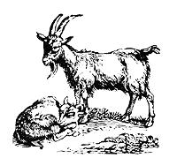

CLOCKWISE FROM RIGHT: Stock panels last . . . . Welded wire fencing doesn't . . . . This healthy looking udder isn't large, but it's well-placed . . . . A case of mastitis waiting to happen and an armoring terror to milk . . . . The creeping inflation of goats . . . . This gal has got too-close front legs, arthritic-looking knees, and untrimmed hooves, to boot! . . . An excellent Nubian with good body capacity, almost perfect underpinnings, and a fairly capacious udder.